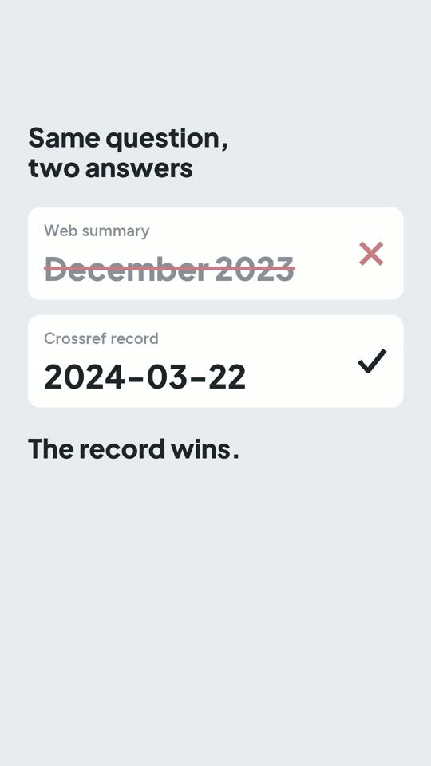

The problem
When Claude Code uses WebFetch to read a webpage, it usually receives the output of a separate AI extraction step, rather than the full page. That output may be a summary or an answer to the extraction prompt. The prompt affects what the agent receives. This hidden step is the discovery the video explains first.
The video then uses a labelled wrong-date reenactment to show why I fetch the original publication record before citing a date. Other tools can return fuller content; this describes WebFetch, not every AI browser.
Documentation checked 2026-10-26: https://code.claude.com/docs/en/tools-reference#webfetch-tool-behavior
The rule
No number, date, identifier, quotation or status in my notes may come from a summary.
-
A summary may tell the agent which pages are worth reading.
-
For anything that matters, the agent fetches the record itself and saves it. For a paper, that is its Crossref entry (or OpenAlex), read directly, for example:
curl -s https://api.crossref.org/works/10.1007/s11704-024-40231-1 -
Notes cite the saved record, never the summary.
On screen
The video uses a reenactment, labelled as such: a summary that gives the paper's publication date as December 2023. The comparison then uses the real Crossref record for the same DOI, which says 2024-03-22.

Cost (prices as of Oct 2026)
- Crossref API: free, no key.
- Claude Code: included from Claude Pro, $20/month, which has usage limits. I use Max ($200/month).
Try it
The prompt writes the rule into CLAUDE.md, with the same text in AGENTS.md for Codex. It
also writes fetch_record.py, a small script that:
- fetches a paper's Crossref record by DOI;
- saves the record in
records/without its reference list; - prints the publication date.
Needs Claude Code (or Codex), Python 3 and internet; no API key. It leaves out OpenAlex, arXiv and non-paper records. Tested on 2026-10-16 with Claude Code 2.1.301. It passed on the first run in 34 s. The DOI from the video printed 2024-03-22, and the saved record had no reference list.
Set up a "no numbers from summaries" rule and a record fetcher in this folder. Needs Python 3 and internet.
1. Create `CLAUDE.md` and `AGENTS.md` (same text, so Claude Code and Codex both read it) containing exactly this rule:
## Records, not summaries
- No number, date, identifier (DOI, ISBN, ID), quotation or status (published, retracted, accepted) in these notes may come from a web search result or a page summary.
- A summary may only decide which sources are worth reading.
- For anything that matters, fetch the record itself, save it under `records/`, and cite the saved file.
- For a paper, the record is its Crossref entry: run `python3 fetch_record.py <DOI>`.
2. Write `fetch_record.py DOI` (standard library only): GET `https://api.crossref.org/works/<DOI>` with a User-Agent that includes `mailto:you@example.org`; save the `message` object as `records/<DOI with / replaced by _>.json`, without its `reference` list (it is full of other people's names); print the DOI, the title, and the `published` date as YYYY-MM-DD (or YYYY-MM / YYYY if that is all the record has). Exit with a clear message on a 404 or network error.
Done when: `python3 fetch_record.py 10.1007/s11704-024-40231-1` prints the date 2024-03-22, the saved JSON has no `reference` key, and both CLAUDE.md and AGENTS.md contain the rule.
Left out on purpose: OpenAlex, arXiv and non-paper records; add a fetcher per source the same way.
Gotchas
- The summary sounds equally confident whether or not the number was on the page. Its tone tells you nothing; only the record does.
- One paper can have several dates. This DOI's Crossref record says published online
2024-03-22 and published in print 2024-12 (volume 18, issue 6). Name the field you mean. The
prompt uses
published, which here is the online date. (Found while testing the prompt.) - A Crossref record includes the paper's full reference list, with other people's names. If names matter in your notes, keep it out of the saved record, as the prompt does.
En español: antes de citar una fecha o un número que aparece en un resumen, reviso la fuente: el agente busca el registro real (para un paper, Crossref), lo guarda y cita desde ahí. Costo mínimo: Claude Pro, $20/mes, con límites de uso (precios a oct 2026).
Pruébalo: el prompt de "Try it" (en inglés) escribe la regla en CLAUDE.md /
AGENTS.md y un script que baja el registro de Crossref por DOI. Probado el 2026-10-16: para
este paper imprime 2024-03-22.